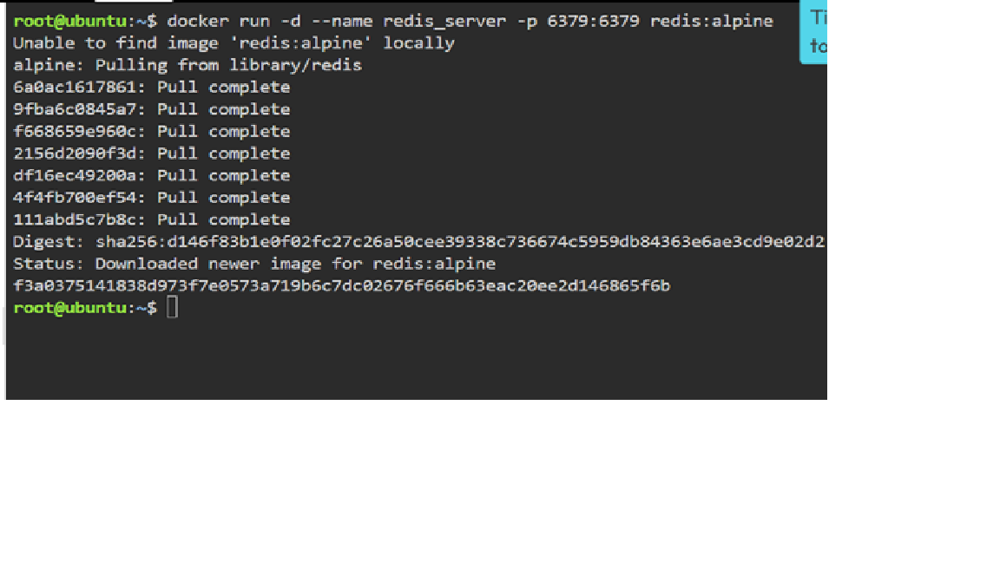
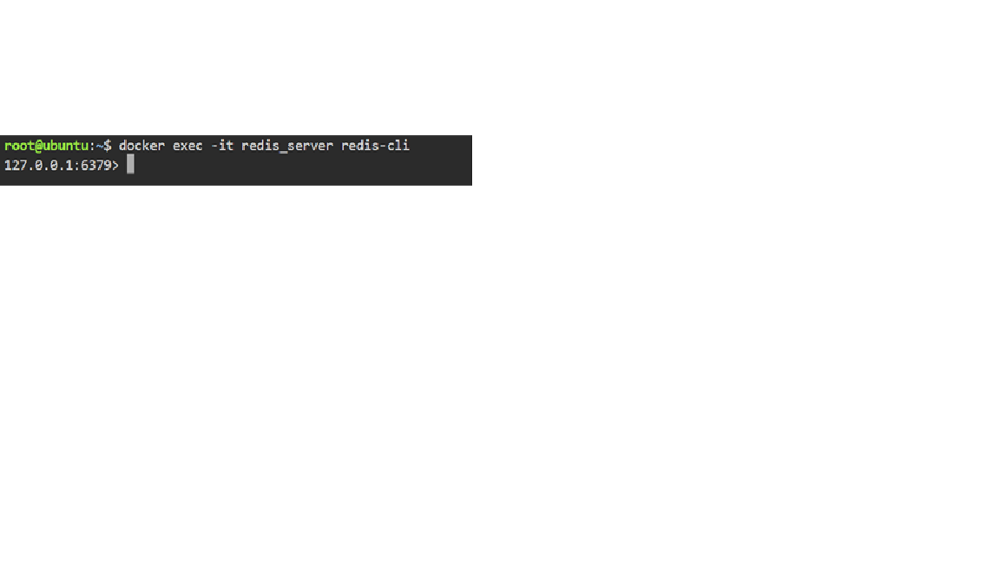
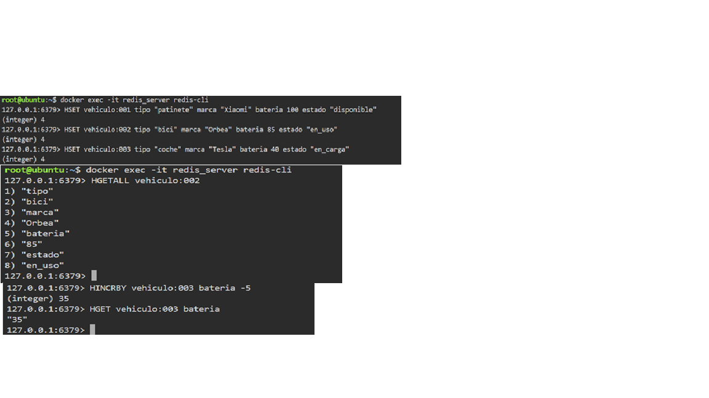
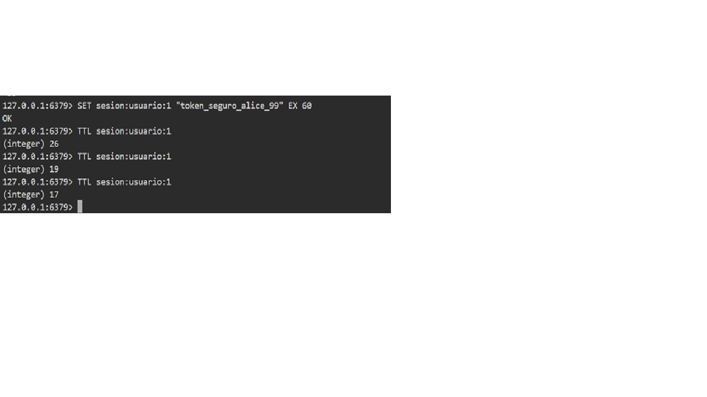
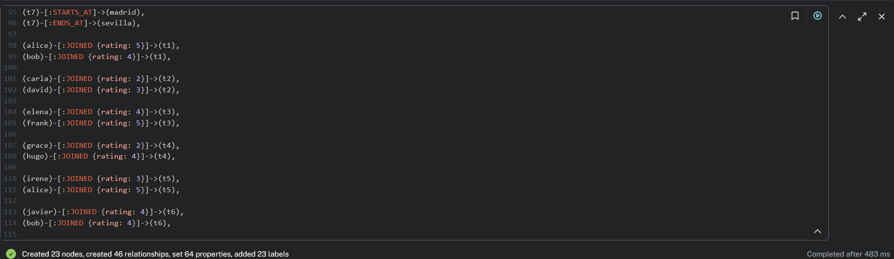
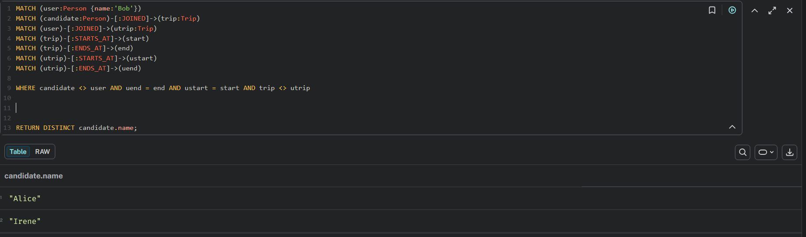

1. Introducción
EcoDrive es una plataforma de movilidad urbana sostenible que ofrece alquiler de patinetes eléctricos, bicicletas y coches compartidos. Debido a su crecimiento y a la diversidad de datos manejados por la plataforma, una única base de datos relacional tradicional deja de ser suficiente para cubrir todas las necesidades del sistema.
Por ello, se plantea una arquitectura de persistencia políglota, seleccionando para cada servicio el motor NoSQL más adecuado según el tipo de datos, el volumen de escrituras, la necesidad de escalado y el patrón principal de consulta.
2. Justificación arquitectónica
La selección de cada sistema gestor se ha realizado en función del caso de uso concreto de cada servicio. La idea principal no es usar una sola base de datos para todo, sino elegir el modelo de persistencia que mejor resuelve cada necesidad.
| Servicio | SGBD elegido | Tipo NoSQL | Justificación |
|---|---|---|---|
| Catálogo de vehículos y mantenimiento | MongoDB | Documental | Permite almacenar vehículos con atributos distintos y un historial de mantenimiento flexible dentro del mismo documento. |
| Telemetría y sensores IoT | Apache Cassandra | Columnar | Optimizado para escrituras masivas, escalado horizontal y consulta eficiente del historial temporal por vehículo. |
| Sesiones activas y caché de batería | Redis | Clave-valor | Respuesta muy rápida en memoria, soporte nativo para TTL y estructuras eficientes para estado temporal y campos modificables. |
| Red social de carpooling | Neo4j | Grafos | Ideal para modelar relaciones entre usuarios, amistades, rutas compartidas y recomendaciones basadas en conexiones. |
3. Elementos de diseño utilizados
Agregados y documentos
Se ha modelado un documento por vehículo, incrustando en él el historial de mantenimiento. Esto permite almacenar tipos de vehículos distintos sin un esquema rígido.
Campos incrustados: mantenimientos, piezas, coste, fecha.
Partition Key y Clustering Column
La tabla de telemetría se ha diseñado siguiendo el enfoque query-first.
La Partition Key es vehicle_id y la Clustering Column es event_time.
Objetivo: consultar el historial completo de un vehículo de forma eficiente.
Tipos de datos
Para sesiones temporales se ha usado expiración automática mediante TTL.
Para la batería y estado de los vehículos se han utilizado estructuras HASH.
Claves: sesion:token:ABC123, vehiculo:veh001.
Nodos y relaciones
Se han definido nodos Usuario, Ruta y relaciones con semántica clara
como AMIGO_DE y VIAJA_A.
Modelo relacional del grafo: usuarios conectados por amistad y por destino de viaje.
4. Prompts utilizados para la generación inicial con IA
Para obtener una primera propuesta de scripts se utilizaron prompts específicos para cada motor, indicando restricciones de modelado y evitando errores típicos de enfoque relacional.
Prompt para MongoDB
Genera un script MongoDB para una colección de vehículos de EcoDrive. Debe incluir patinetes, bicicletas y coches con atributos diferentes por tipo. Incluye historial de mantenimiento. Evita diseño relacional y usa documentos agregados si vehículo y mantenimiento se consultan juntos.
Prompt para Cassandra
Genera un script CQL para telemetría IoT de vehículos de EcoDrive. La consulta principal es obtener el historial completo de un vehículo concreto por fecha. Diseña la tabla con enfoque query-first, indicando Partition Key y Clustering Column correctos. Inserta 5 registros para el mismo vehículo.
Prompt para Redis
Genera comandos Redis para sesiones temporales y caché de batería de vehículos de EcoDrive. Usa TTL para sesiones y evita usar solo strings para todo. Prioriza HASH si permite modificar campos individuales como batería.
Prompt para Neo4j
Genera un script Cypher para una red social de carpooling en EcoDrive. Crea usuarios, rutas y relaciones semánticas con dirección, como AMIGO_DE y VIAJA_A. Evita tratar los nodos como tablas relacionales.
5. Auditoría crítica del código generado por IA
Tras generar las primeras propuestas de código, se realizó una auditoría para detectar antipatrones NoSQL. El objetivo fue corregir diseños demasiado relacionales o estructuras poco adecuadas para cada motor.
Corrección técnica 1 — MongoDB: evitar normalización encubierta
La propuesta inicial separaba la información en dos colecciones: una para vehículos y otra para mantenimientos, relacionándolas mediante un identificador. Este diseño imitaba el modelo relacional y obligaba a reconstruir los datos mediante referencias.
Se corrigió incrustando el historial de mantenimiento dentro del documento del vehículo, ya que ambos datos se consultan habitualmente de forma conjunta. Esto mejora el rendimiento de lectura y respeta el concepto de agregado documental.
Corrección técnica 2 — Cassandra: rediseño de la clave primaria
La propuesta inicial no estaba orientada a la consulta real del sistema y utilizaba un diseño de clave
primaria poco adecuado. Se rediseñó la tabla usando vehicle_id como
Partition Key y event_time como Clustering Column.
Este cambio permite que los datos de un mismo vehículo queden agrupados lógicamente y que el historial pueda consultarse por orden temporal, evitando además problemas de distribución como hotspots.
Corrección técnica 3 — Redis: uso de HASH en lugar de String JSON
La IA proponía almacenar el estado de cada vehículo como un único string con formato JSON. Aunque funcional, esta solución no es la más eficiente para Redis cuando se quiere modificar solo un campo concreto.
Se cambió a estructuras HASH mediante HSET y HINCRBY,
lo que permite actualizar directamente la batería sin reescribir todo el objeto.
Corrección técnica 4 — Neo4j: relaciones con semántica
Se revisó el modelado para asegurar que Neo4j no se usara como una tabla SQL disfrazada.
Las relaciones se definieron con nombres y dirección clara, por ejemplo
(:Person)-[:FRIEND_OF]->(:Person) y
(:Person)-[:JOINED]->(:Trip).
La IA genero varios CREATE para cargar los datos de la tabla, lo cual daba error
al realizar consultas. Esto fue evitado atomizando el script de carga.
La IA no quiso añadir originalmente datos a las relaciones, se las añadi
escribiendo las primeras a (:person)-[JOINED]->(:Trip) y luego el resto a partir de esas
autocompleto copilot. Esto permitió crear un grafo con relaciones entre usuarios y rutas, y no solo nodos sin conexiones.
6. Scripts finales de carga y consultas
6.1. MongoDB — Catálogo de vehículos
Inserción de tres vehículos con atributos distintos y mantenimiento incrustado.
use ecodrive
db.vehiculos.insertMany([
{
_id: "veh001",
tipo: "patinete",
marca: "Xiaomi",
modelo: "Mi Scooter Pro 2",
autonomia_km: 45,
limite_peso_kg: 100,
disponible: true,
mantenimientos: [
{
fecha: ISODate("2026-03-01T10:00:00Z"),
tipo: "freno",
piezas: ["pastillas de freno"],
coste: 35
}
]
},
{
_id: "veh002",
tipo: "bicicleta",
marca: "Orbea",
modelo: "Urban Ride",
autonomia_km: 70,
marchas: 7,
disponible: true,
mantenimientos: [
{
fecha: ISODate("2026-03-12T09:30:00Z"),
tipo: "transmisión",
piezas: ["cadena", "piñón"],
coste: 55
}
]
},
{
_id: "veh003",
tipo: "coche",
marca: "Renault",
modelo: "Zoe",
autonomia_km: 300,
tipo_combustible: "eléctrico",
plazas: 5,
disponible: false,
mantenimientos: [
{
fecha: ISODate("2026-03-20T16:00:00Z"),
tipo: "batería",
piezas: ["módulo BMS"],
coste: 320
}
]
}
])
Consulta de vehículos que tengan el atributo tipo_combustible.
db.vehiculos.find(
{ tipo_combustible: { $exists: true } },
{ _id: 1, tipo: 1, marca: 1, modelo: 1, tipo_combustible: 1 }
)
6.2. Cassandra — Telemetría IoT
Creación del keyspace y de la tabla siguiendo un diseño orientado a consulta.
CREATE KEYSPACE IF NOT EXISTS ecodrive
WITH replication = {'class': 'SimpleStrategy', 'replication_factor': 1};
USE ecodrive;
CREATE TABLE IF NOT EXISTS telemetria_por_vehiculo (
vehicle_id text,
event_time timestamp,
lat double,
lon double,
speed double,
battery_level int,
PRIMARY KEY ((vehicle_id), event_time)
) WITH CLUSTERING ORDER BY (event_time DESC);
Inserción de cinco registros de telemetría para el mismo vehículo.
INSERT INTO telemetria_por_vehiculo (vehicle_id, event_time, lat, lon, speed, battery_level)
VALUES ('veh001', '2026-04-28 08:00:00', 40.4168, -3.7038, 12.5, 96);
INSERT INTO telemetria_por_vehiculo (vehicle_id, event_time, lat, lon, speed, battery_level)
VALUES ('veh001', '2026-04-28 08:05:00', 40.4171, -3.7042, 14.0, 94);
INSERT INTO telemetria_por_vehiculo (vehicle_id, event_time, lat, lon, speed, battery_level)
VALUES ('veh001', '2026-04-28 08:10:00', 40.4175, -3.7048, 10.8, 92);
INSERT INTO telemetria_por_vehiculo (vehicle_id, event_time, lat, lon, speed, battery_level)
VALUES ('veh001', '2026-04-28 08:15:00', 40.4180, -3.7053, 0.0, 91);
INSERT INTO telemetria_por_vehiculo (vehicle_id, event_time, lat, lon, speed, battery_level)
VALUES ('veh001', '2026-04-28 08:20:00', 40.4184, -3.7059, 16.1, 89);
Consulta del historial completo de telemetría de un vehículo específico.
SELECT * FROM telemetria_por_vehiculo WHERE vehicle_id = 'veh001';
6.3. Redis — Sesiones y caché de batería
Creación de una sesión temporal con expiración automática en 60 segundos.
SET sesion:usuario:1 "token_seguro_alice_99" EX 60 TTL sesion:usuario:1
Registro de batería de tres vehículos distintos usando convención jerárquica con dos puntos.
HSET vehiculo:001 tipo "patinete" marca "Xiaomi" bateria 100 disponible true HSET vehiculo:002 tipo "bici" marca "Orbea" bateria 85 disponible false HSET vehiculo:003 tipo "coche" marca "Tesla" bateria 40 disponible false HINCRBY vehiculo:veh001 bateria -5 HGETALL vehiculo:veh001
6.4. Neo4j — Red social de carpooling
Inserción de nodos y relaciones entre usuarios y rutas.
// =======================
// NODOS: PERSONAS
// =======================
CREATE
(alice:Person {id:1, name:'Alice', age:28}),
(bob:Person {id:2, name:'Bob', age:31}),
(carla:Person {id:3, name:'Carla', age:26}),
(david:Person {id:4, name:'David', age:35}),
(elena:Person {id:5, name:'Elena', age:29}),
(frank:Person {id:6, name:'Frank', age:40}),
(grace:Person {id:7, name:'Grace', age:27}),
(hugo:Person {id:8, name:'Hugo', age:33}),
(irene:Person {id:9, name:'Irene', age:30}),
(javier:Person {id:10, name:'Javier', age:32}),
(madrid:Location {name:'Madrid'}),
(barcelona:Location {name:'Barcelona'}),
(valencia:Location {name:'Valencia'}),
(sevilla:Location {name:'Sevilla'}),
(zaragoza:Location {name:'Zaragoza'}),
(bilbao:Location {name:'Bilbao'}),
(alice)-[:FRIEND_OF
]->(bob),
(bob)-[:FRIEND_OF
]->(alice),
(alice)-[:FRIEND_OF
]->(carla),
(carla)-[:FRIEND_OF
]->(alice),
(bob)-[:FRIEND_OF
]->(david),
(david)-[:FRIEND_OF
]->(bob),
(carla)-[:FRIEND_OF
]->(elena),
(elena)-[:FRIEND_OF
]->(carla),
(carla)-[:FRIEND_OF
]->(bob),
(bob)-[:FRIEND_OF
]->(carla),
(elena)-[:FRIEND_OF
]->(grace),
(grace)-[:FRIEND_OF
]->(elena),
(frank)-[:FRIEND_OF
]->(hugo),
(hugo)-[:FRIEND_OF
]->(frank),
(hugo)-[:FRIEND_OF
]->(irene),
(irene)-[:FRIEND_OF
]->(hugo),
(irene)-[:FRIEND_OF
]->(javier),
(javier)-[:FRIEND_OF
]->(irene),
(t1:Trip {id:101, date:'2026-05-10'}),
(t2:Trip {id:102, date:'2026-05-11'}),
(t3:Trip {id:103, date:'2026-05-12'}),
(t4:Trip {id:104, date:'2026-05-13'}),
(t5:Trip {id:105, date:'2026-05-14'}),
(t6:Trip {id:106, date:'2026-05-15'}),
(t7:Trip {id:107, date:'2026-05-16'}),
(t1)-[:STARTS_AT]->(madrid),
(t1)-[:ENDS_AT]->(barcelona),
(t2)-[:STARTS_AT]->(madrid),
(t2)-[:ENDS_AT]->(valencia),
(t3)-[:STARTS_AT]->(sevilla),
(t3)-[:ENDS_AT]->(madrid),
(t4)-[:STARTS_AT]->(zaragoza),
(t4)-[:ENDS_AT]->(barcelona),
(t5)-[:STARTS_AT]->(madrid),
(t5)-[:ENDS_AT]->(barcelona),
(t6)-[:STARTS_AT]->(bilbao),
(t6)-[:ENDS_AT]->(madrid),
(t7)-[:STARTS_AT]->(madrid),
(t7)-[:ENDS_AT]->(sevilla),
(alice)-[:JOINED {rating: 5}]->(t1),
(bob)-[:JOINED {rating: 4}]->(t1),
(carla)-[:JOINED {rating: 2}]->(t2),
(david)-[:JOINED {rating: 3}]->(t2),
(elena)-[:JOINED {rating: 4}]->(t3),
(frank)-[:JOINED {rating: 5}]->(t3),
(grace)-[:JOINED {rating: 2}]->(t4),
(hugo)-[:JOINED {rating: 4}]->(t4),
(irene)-[:JOINED {rating: 3}]->(t5),
(alice)-[:JOINED {rating: 5}]->(t5),
(javier)-[:JOINED {rating: 4}]->(t6),
(bob)-[:JOINED {rating: 4}]->(t6),
(carla)-[:JOINED {rating: 2}]->(t7),
(grace)-[:JOINED {rating: 3}]->(t7);
Consulta de personas que realizan el mismo viaje sin esa persona
MATCH (user:Person {name:'Bob'})
MATCH (candidate:Person)-[:JOINED]->(trip:Trip)
MATCH (user)-[:JOINED]->(utrip:Trip)
MATCH (trip)-[:STARTS_AT]->(start)
MATCH (trip)-[:ENDS_AT]->(end)
MATCH (utrip)-[:STARTS_AT]->(ustart)
MATCH (utrip)-[:ENDS_AT]->(uend)
WHERE candidate <> user AND uend = end AND ustart = start AND trip <> utrip
RETURN DISTINCT candidate.name;
7. Ejecución y visualización
Para validar la implementación, se deben incluir capturas de pantalla de la ejecución de los scripts y de los resultados de las consultas en cada motor. Estas capturas pueden obtenerse desde consola o desde interfaces visuales como Mongo Express, RedisInsight o Neo4j Browser.
Captura de inserción y consulta en MongoDB.
7.2.1 Docker up y entrar a redis


7.2.2 Captura de carga de vehículos, consulta de datos y modificación de batería

7.2.3 Creación de token de usuario y TTL

7.3.1 Captura del grafo en neo4j

7.3.2 Captura de consulta en neo4j

8. Conclusión
La práctica demuestra que una arquitectura NoSQL eficaz no consiste en sustituir una base de datos relacional por otra única tecnología, sino en seleccionar el motor más adecuado para cada necesidad concreta. En este caso, MongoDB ofrece flexibilidad documental para el catálogo, Cassandra soporta la telemetría masiva, Redis resuelve el estado temporal con gran velocidad y Neo4j modela de forma natural la red social de usuarios.
Además, la auditoría del código generado con IA ha permitido corregir varios antipatrones habituales, mejorando el diseño final y alineándolo con los principios de modelado propios de cada sistema NoSQL.